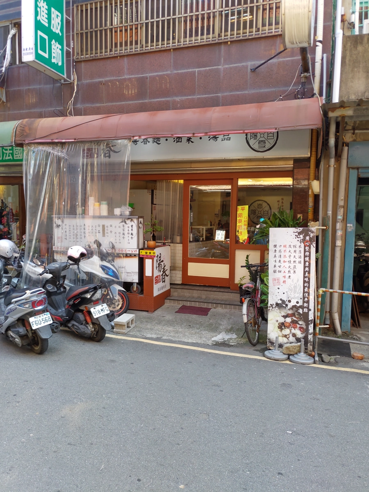
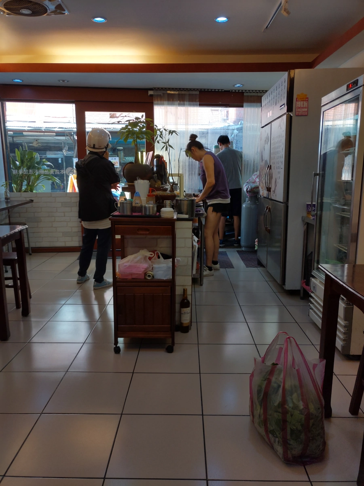
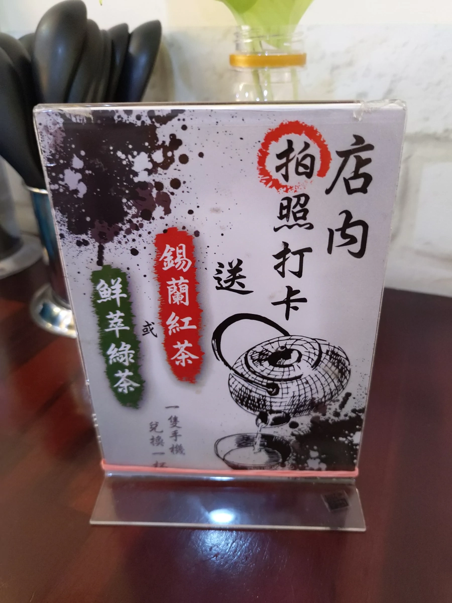
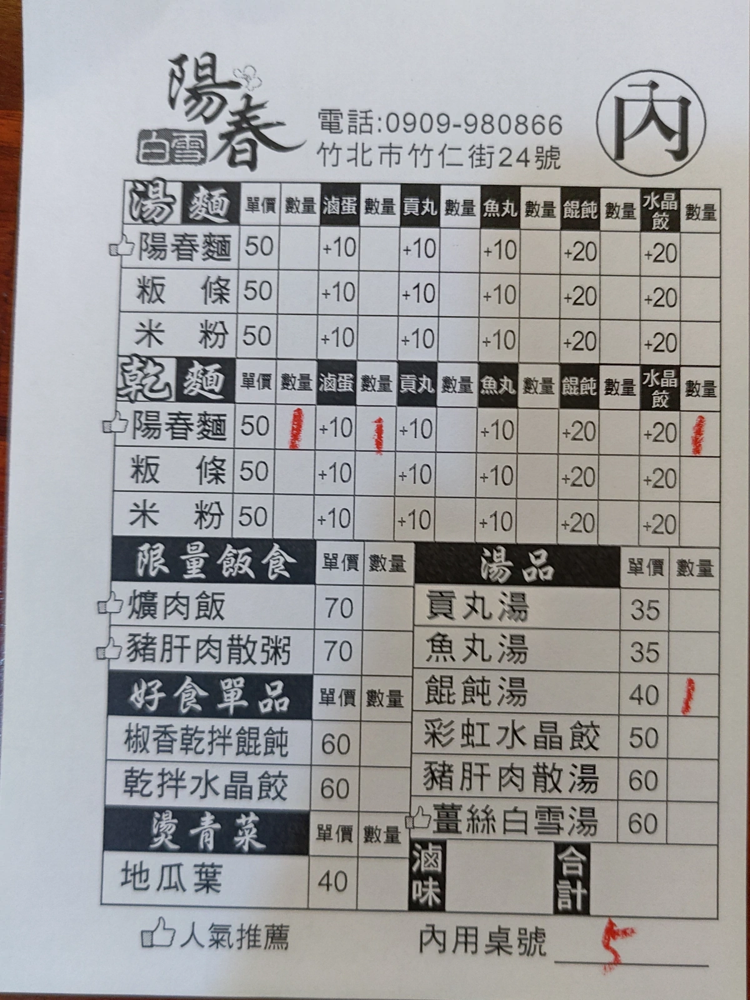
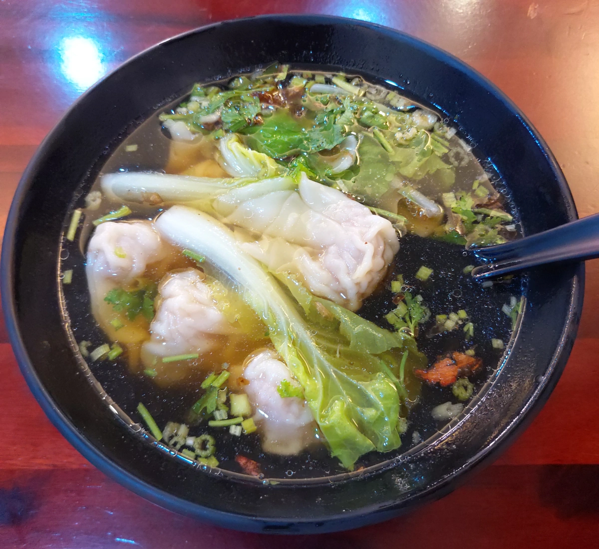
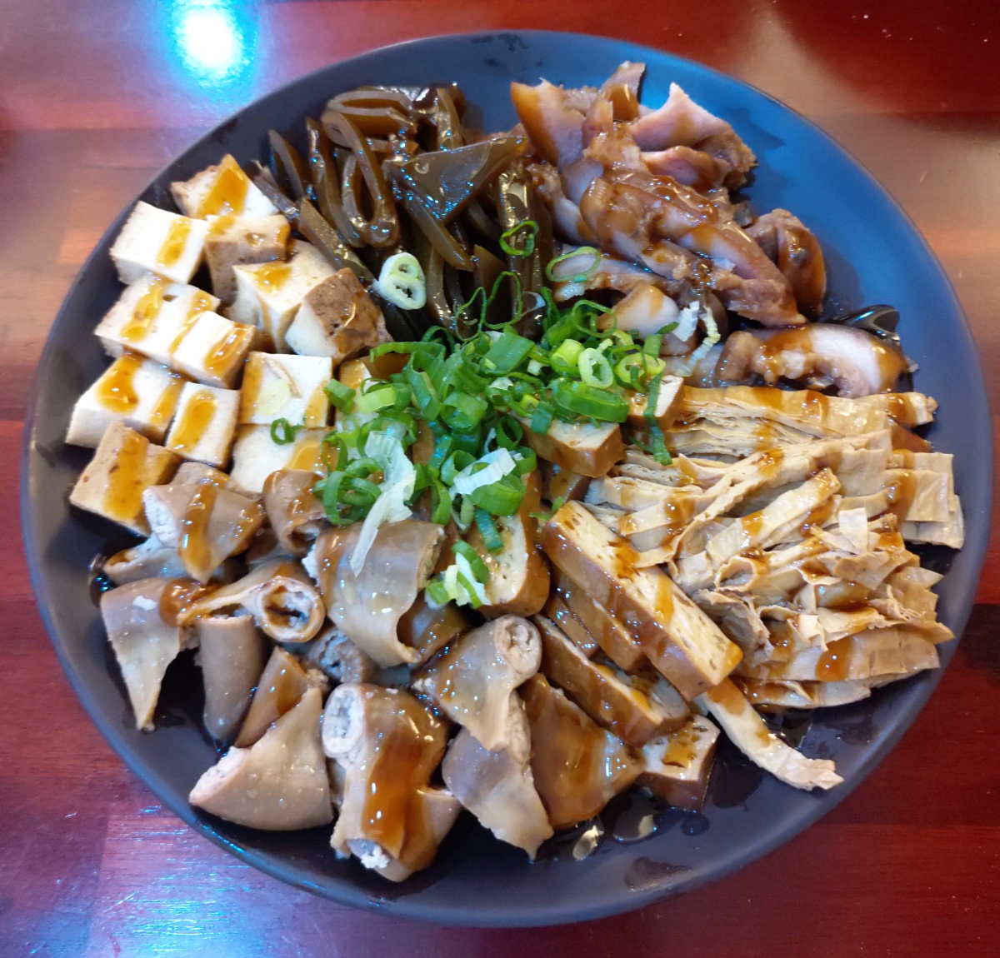
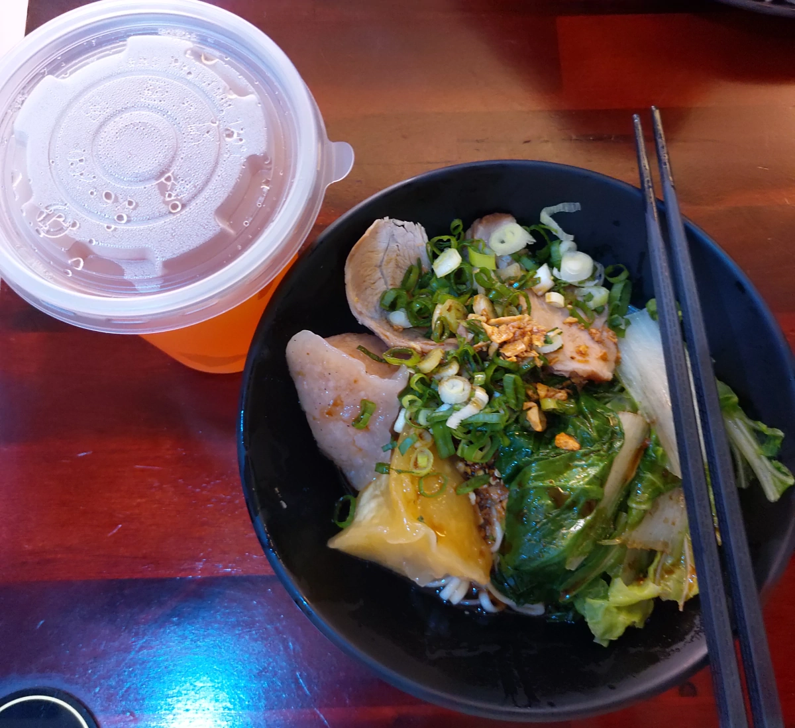

[竹北][竹仁市場 2] 陽春白雪
| 餐廳名稱: | 陽春白雪 |
|---|---|
| 地 址: | 新竹縣竹北市竹仁街24號 |
| 營業時間: | 週二 ~ 週六 10:00 - 14:00 17:00 - 20:00 |
| 週日 10:00 - 14:00 | |
| 週一 公休 | |
| 電 話: | 0909 980 866 |
這是竹仁市場系列第二發 - 陽春白雪。這間店剛開業幾年而已，似乎是年輕夫婦經營， 這邊人潮多，競爭激烈，沒本事應該也不敢來。
因為是新的店，總算裝潢是新的，乾乾淨淨，總算能舒服的坐下。竟然主打陽春麵， 不過想想也對，市場特性是，逛到累了，吃碗小麵再回家，或是當中繼站。 像新竹市錦華市場，也是有個經營多年的無名小麵攤，賣一小碗素麵或米粉，素高湯敖的不錯，生意還挺好的，買菜買到累了，就來個一小碗。 
老闆、老闆娘忙著做菜、切菜。老闆娘似乎後頭還有在忙什麼，人多就出來忙，忙完就進去後頭房間。 
打卡送飲料。 
今日菜單，今天陽春白雪是當中繼站，點很少而已，不過後來又加一堆滷味，越點越多，不知不覺就失控了。當然，今天有帶玻璃容器可打包。 
餛飩湯，今日第三名，餛飩尚可，它的餡緊實，薄皮。湯清淡，跑去拿白胡椒來加，改善一些。似乎沒看到鹽罐。 
今日第一名，這滷味好吃耶，醬油膏也有幫上忙。店家以18香滷味這口號行銷，這個18香調配的不錯，之前只聽過大陸有13香，這邊又多5種。 總之，優秀的滷味，可惜竹仁市場，汽車寸步難行，沒辦法車停門口衝進來包滷味。 
今日第二名，乾陽春麵，另外加滷蛋、水晶餃。滷蛋老闆忘了，隨後補上了。其實那就是滷味裡面的滷蛋，早知道要點滷味的話，陽春麵就不用加滷蛋了。 乾麵是用油蔥、醬油膏等醬來調味，是古早味手法。水晶餃一份兩顆，兩種顏色，我吃不出有啥差異。滷蛋就跟滷味一樣，有入味。 乾麵部分味道挺鹹香的，還不錯吃。 
陽春白雪 是間中規中矩的小麵店，順道經過是可以拜訪一下啦。願意專程來包滷味，可惜這邊車子進出不方便，再找機會吧。